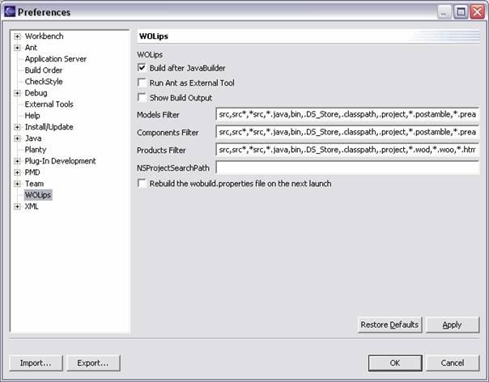

| Build after JavaBuilder | When this option is checked applications and frameworks are built everytime any java code is compiled (which is everytime you save any changes, or when you specifically do Project > Rebuild Project). The '+' and '-' buttons in the perspective turns this option on/off. |
| Run Ant as External Tool | There are two ways to build applications and frameworks: with the eclipse AntRunner and as an external tool. With this option checked the external tool alternative is used. Otherwise the eclipse AntRunner is used. |
| Show Build Output | Currently does nothing. |
| Models Filter | |
| Components Filter | |
| Products Filter | |
| NSProjectSearchPath | The launching configuration wizard generates the NSProjectSearchPath for you to enable the rapid turnaround mode for frameworks. There are two ways to expand it: - in the preferences - in the launch configuration wizard Under the WOArguments tab you will find a list of default arguments including: "-NSProjectSearchPath (GeneratedByWOLips)" In the case of a launch WOLips replaces "GeneratedByWOLips" with a path to all your projects in the the workbench.(It does not matter if the projects are in folder workspace or not.) If you expand the NSProjectPath in the preferences WOLips takes care of the "," between the entires. If you expand it in the launch configuration wizard, you have to add "," between your entries and the "GenereatedByWOLips". How to add a launch configuration: - Select your project. - Select Run->Run...(Or Run->Debug...) - Choose WOApplication. - Click add. - Search for the Main class. - Click run. You can use this configuration to run and debug. In case your NextRoot has changed you need to update your wobuild.properties file. Select "Rebuild the wobuild.properties file on next launch" in the preferences. On the next launch the wobuild.properties file gets an update. |
| Rebuild the wobuild.properties file on the next launch | The Ant build script requires that this file exists, and is correct. It is normally created for you the first time you start eclipse with WOLips installed. If, for some reason, you need to recreate this file, check this option and restart eclipse. |